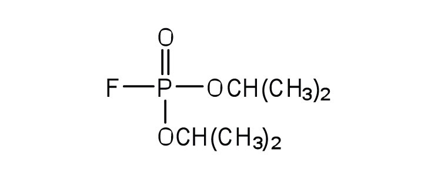
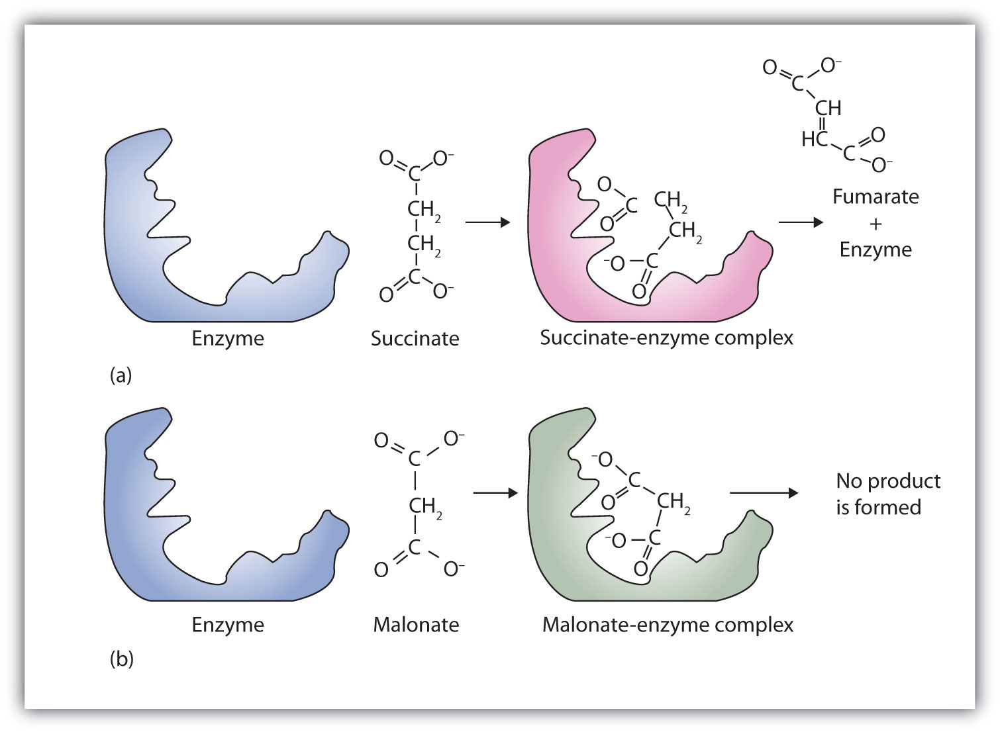
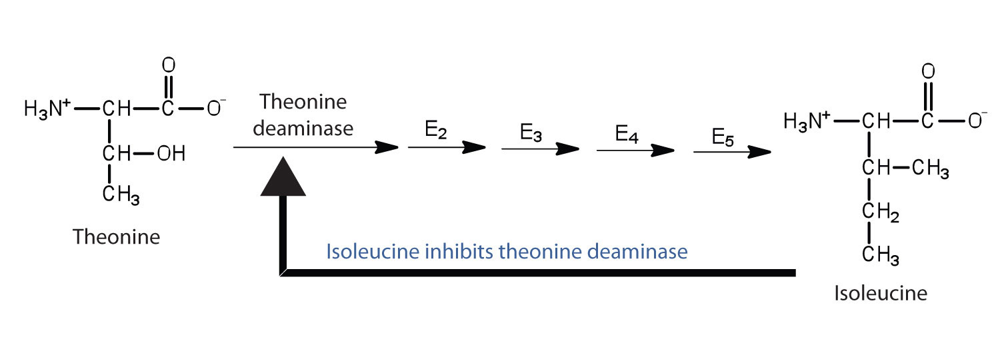

In Section 18.7 "Enzyme Activity", we noted that enzymes are inactivated at high temperatures and by changes in pH. These are nonspecific factors that would inactivate any enzyme. The activity of enzymes can also be regulated by more specific inhibitors. Many compounds are poisons because they bind covalently to particular enzymes or kinds of enzymes and inactivate them (Table 18.7 "Poisons as Enzyme Inhibitors").
Table 18.7 Poisons as Enzyme Inhibitors
| Poison | Formula | Example of Enzyme Inhibited | Action |
|---|---|---|---|
| arsenate | AsO43− | glyceraldehyde 3-phosphate dehydrogenase | substitutes for phosphate |
| iodoacetate | ICH2COO− | triose phosphate dehydrogenase | binds to cysteine SH group |
| diisopropylfluoro-phosphate (DIFP; a nerve poison) |

|
acetylcholinesterase | binds to serine OH group |
An irreversible inhibitorA substance that inactivates an enzyme by bonding covalently to a specific group at the active site. inactivates an enzyme by bonding covalently to a particular group at the active site. The inhibitor-enzyme bond is so strong that the inhibition cannot be reversed by the addition of excess substrate. The nerve gases, especially DIFP, irreversibly inhibit biological systems by forming an enzyme-inhibitor complex with a specific OH group of serine situated at the active sites of certain enzymes. The peptidases trypsin and chymotrypsin contain serine groups at the active site and are inhibited by DIFP.
A reversible inhibitorA substance that inactivates an enzyme by binding at the active site through noncovalent, reversible interactions. inactivates an enzyme through noncovalent, more easily reversed, interactions. Unlike an irreversible inhibitor, a reversible inhibitor can dissociate from the enzyme. Reversible inhibitors include competitive inhibitors and noncompetitive inhibitors. (There are additional types of reversible inhibitors.) A competitive inhibitorA compound that resembles a particular substrate and competes with the substrate for binding at the active site of an enzyme to slow the rate of the reaction. is any compound that bears a structural resemblance to a particular substrate and thus competes with that substrate for binding at the active site of an enzyme. The inhibitor is not acted on by the enzyme but does prevent the substrate from approaching the active site.
The degree to which a competitive inhibitor interferes with an enzyme’s activity depends on the relative concentrations of the substrate and the inhibitor. If the inhibitor is present in relatively large quantities, it will initially block most of the active sites. But because the binding is reversible, some substrate molecules will eventually bind to the active site and be converted to product. Increasing the substrate concentration promotes displacement of the inhibitor from the active site. Competitive inhibition can be completely reversed by adding substrate so that it reaches a much higher concentration than that of the inhibitor.
Studies of competitive inhibition have provided helpful information about certain enzyme-substrate complexes and the interactions of specific groups at the active sites. As a result, pharmaceutical companies have synthesized drugs that competitively inhibit metabolic processes in bacteria and certain cancer cells. Many drugs are competitive inhibitors of specific enzymes.
A classic example of competitive inhibition is the effect of malonate on the enzyme activity of succinate dehydrogenase (Figure 18.15 "Competitive Inhibition"). Malonate and succinate are the anions of dicarboxylic acids and contain three and four carbon atoms, respectively. The malonate molecule binds to the active site because the spacing of its carboxyl groups is not greatly different from that of succinate. However, no catalytic reaction occurs because malonate does not have a CH2CH2 group to convert to CH=CH. This reaction will also be discussed in connection with the Krebs cycle and energy production. (For more information about the Krebs cycle, see Chapter 20 "Energy Metabolism", Section 20.4 "Stage III of Catabolism".)
Figure 18.15 Competitive Inhibition
(a) Succinate binds to the enzyme succinate dehydrogenase. A dehydrogenation reaction occurs, and the product—fumarate—is released from the enzyme. (b) Malonate also binds to the active site of succinate dehydrogenase. In this case, however, no subsequent reaction occurs while malonate remains bound to the enzyme.
Chemotherapy is the strategic use of chemicals (that is, drugs) to destroy infectious microorganisms or cancer cells without causing excessive damage to the other, healthy cells of the host. From bacteria to humans, the metabolic pathways of all living organisms are quite similar, so the search for safe and effective chemotherapeutic agents is a formidable task. Many well-established chemotherapeutic drugs function by inhibiting a critical enzyme in the cells of the invading organism.
An antibiotic is a compound that kills bacteria; it may come from a natural source such as molds or be synthesized with a structure analogous to a naturally occurring antibacterial compound. Antibiotics constitute no well-defined class of chemically related substances, but many of them work by effectively inhibiting a variety of enzymes essential to bacterial growth.
Penicillin, one of the most widely used antibiotics in the world, was fortuitously discovered by Alexander Fleming in 1928, when he noticed antibacterial properties in a mold growing on a bacterial culture plate. In 1938, Ernst Chain and Howard Florey began an intensive effort to isolate penicillin from the mold and study its properties. The large quantities of penicillin needed for this research became available through development of a corn-based nutrient medium that the mold loved and through the discovery of a higher-yielding strain of mold at a United States Department of Agriculture research center near Peoria, Illinois. Even so, it was not until 1944 that large quantities of penicillin were being produced and made available for the treatment of bacterial infections.
Penicillin functions by interfering with the synthesis of cell walls of reproducing bacteria. It does so by inhibiting an enzyme—transpeptidase—that catalyzes the last step in bacterial cell-wall biosynthesis. The defective walls cause bacterial cells to burst. Human cells are not affected because they have cell membranes, not cell walls.
Several naturally occurring penicillins have been isolated. They are distinguished by different R groups connected to a common structure: a four-member cyclic amide (called a lactam ring) fused to a five-member ring. The addition of appropriate organic compounds to the culture medium leads to the production of the different kinds of penicillin.
The penicillins are effective against gram-positive bacteria (bacteria capable of being stained by Gram’s stain) and a few gram-negative bacteria (including the intestinal bacterium Escherichia coli). They are effective in the treatment of diphtheria, gonorrhea, pneumonia, syphilis, many pus infections, and certain types of boils. Penicillin G was the earliest penicillin to be used on a wide scale. However, it cannot be administered orally because it is quite unstable; the acidic pH of the stomach converts it to an inactive derivative. The major oral penicillins—penicillin V, ampicillin, and amoxicillin—on the other hand, are acid stable.
Some strains of bacteria become resistant to penicillin through a mutation that allows them to synthesize an enzyme—penicillinase—that breaks the antibiotic down (by cleavage of the amide linkage in the lactam ring). To combat these strains, scientists have synthesized penicillin analogs (such as methicillin) that are not inactivated by penicillinase.
Some people (perhaps 5% of the population) are allergic to penicillin and therefore must be treated with other antibiotics. Their allergic reaction can be so severe that a fatal coma may occur if penicillin is inadvertently administered to them. Fortunately, several other antibiotics have been discovered. Most, including aureomycin and streptomycin, are the products of microbial synthesis. Others, such as the semisynthetic penicillins and tetracyclines, are made by chemical modifications of antibiotics; and some, like chloramphenicol, are manufactured entirely by chemical synthesis. They are as effective as penicillin in destroying infectious microorganisms. Many of these antibiotics exert their effects by blocking protein synthesis in microorganisms.
Initially, antibiotics were considered miracle drugs, substantially reducing the number of deaths from blood poisoning, pneumonia, and other infectious diseases. Some seven decades ago, a person with a major infection almost always died. Today, such deaths are rare. Seven decades ago, pneumonia was a dreaded killer of people of all ages. Today, it kills only the very old or those ill from other causes. Antibiotics have indeed worked miracles in our time, but even miracle drugs have limitations. Not long after the drugs were first used, disease organisms began to develop strains resistant to them. In a race to stay ahead of resistant bacterial strains, scientists continue to seek new antibiotics. The penicillins have now been partially displaced by related compounds, such as the cephalosporins and vancomycin. Unfortunately, some strains of bacteria have already shown resistance to these antibiotics.
Some reversible inhibitors are noncompetitive. A noncompetitive inhibitorA compound that can combine with either the free enzyme or the enzyme-substrate complex at a site distinct from the active site to slow the rate of the reaction. can combine with either the free enzyme or the enzyme-substrate complex because its binding site on the enzyme is distinct from the active site. Binding of this kind of inhibitor alters the three-dimensional conformation of the enzyme, changing the configuration of the active site with one of two results. Either the enzyme-substrate complex does not form at its normal rate, or, once formed, it does not yield products at the normal rate. Because the inhibitor does not structurally resemble the substrate, the addition of excess substrate does not reverse the inhibitory effect.
Feedback inhibitionA normal biochemical process that makes use of noncompetitive inhibitors to control some enzymatic activity. is a normal biochemical process that makes use of noncompetitive inhibitors to control some enzymatic activity. In this process, the final product inhibits the enzyme that catalyzes the first step in a series of reactions. Feedback inhibition is used to regulate the synthesis of many amino acids. For example, bacteria synthesize isoleucine from threonine in a series of five enzyme-catalyzed steps. As the concentration of isoleucine increases, some of it binds as a noncompetitive inhibitor to the first enzyme of the series (threonine deaminase), thus bringing about a decrease in the amount of isoleucine being formed (Figure 18.16 "Feedback Inhibition of Threonine Deaminase by Isoleucine").
Figure 18.16 Feedback Inhibition of Threonine Deaminase by Isoleucine
Threonine deaminase is the first enzyme in the conversion of threonine to isoleucine. Isoleucine inhibits threonine deaminase through feedback inhibition .
What are the characteristics of an irreversible inhibitor?
In what ways does a competitive inhibitor differ from a noncompetitive inhibitor?
It inactivates an enzyme by bonding covalently to a particular group at the active site.
A competitive inhibitor structurally resembles the substrate for a given enzyme and competes with the substrate for binding at the active site of the enzyme. A noncompetitive inhibitor binds at a site distinct from the active site and can bind to either the free enzyme or the enzyme-substrate complex.
What amino acid is present in the active site of all enzymes that are irreversibly inhibited by nerve gases such as DIFP?
Oxaloacetate (OOCCH2COCOO) inhibits succinate dehydrogenase. Would you expect oxaloacetate to be a competitive or noncompetitive inhibitor? Explain.
serine